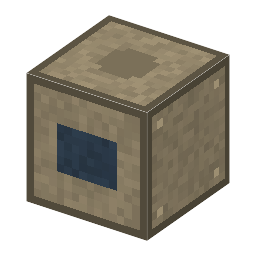

説明
①子ども おもりの重さを、電気の力と比べて量る天秤。いまの「1キログラム」はこういう天秤で決めている。
②学生 磁石×2＋銅（コイル）＋干渉計＋鋼×5。200W・30秒。キログラム原器・ウェストン標準電池・標準抵抗・クリプトン86 ランプを入れると、原器の 1 kg からのずれとあいまいさが出る。空調のそば（温度のゆれ ±0.1℃）と、隣の真空容器（空気の浮力がなくなる）であいまいさが減る。
③大人 1975年、イギリス国立物理学研究所のブライアン・キッブルが考えた。重さの段でコイルの力と重さを釣り合わせ、動かす段でコイルを動かして電圧を測ると、磁石の強さが消えて mgv = UI になる。2016年に亡くなったキッブルにちなんで名前が変わった。
④ガチ 電圧をジョセフソン効果、抵抗を量子ホール効果で測ると、質量がプランク定数 h で決まる。2019年、キログラムは h = 6.62607015×10⁻³⁴ J·s と決めて定義し直された。この MOD の古典版（標準電池・標準抵抗）では 10⁻⁶ ほど（数 mg）で、原器どうしの差 50µg は見えない⚠️。
作り方
使い道
（このアイテムを使うレシピは無い）